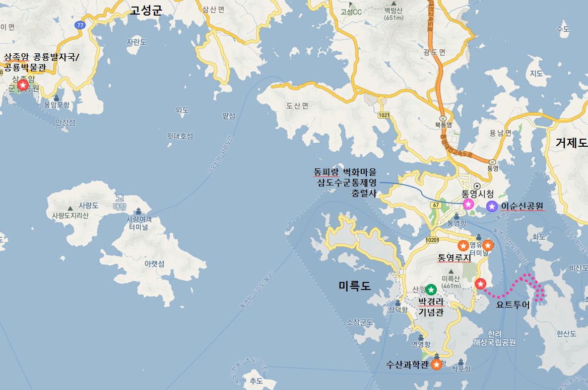
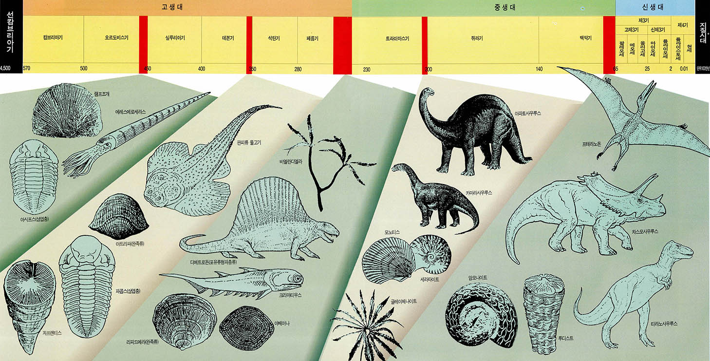

경상남도 고성군

2019년
06월 06일
상족암 공룡 발자국 화석, 공룡박물관, 한산마리나호텔리조트, 라군400 요트 투어 (한산도 해변)
06월 07일
통영수산과학관, 스카이라인 루지 통영, 통영어드벤처타워, 스탠포드호텔앤리조트, 인피니티 수영장, 통영문화재야행-12가지 보물을 찾아라, 삼도수순통제영, 세병관
06월 08일
박경리기념관, 동피랑 벽화마을, 동포루, 충렬사, 이순신 공원
느낀 점, 배운 것
공룡 관광지로 유명하다. 상족암에서 공룡 발자국이 발견되었으며, 공룡 엑스포 등 공룡 관련 상품이 많다.
프로야구팀 NC 다이노스의 팀명도 이곳이 공룡화석으로 유명한 데서 모티브를 따왔다.
공룡의 분류
지구의 역사와 생물들: 이미지 넣자..

주상절리
생성원리 설명, 한자설명, 우리나라 예 사진
최초 작성: 2019년 04월 12일
최종 수정: 2019년 04월 12일